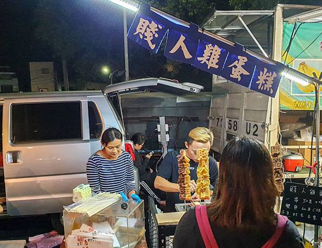
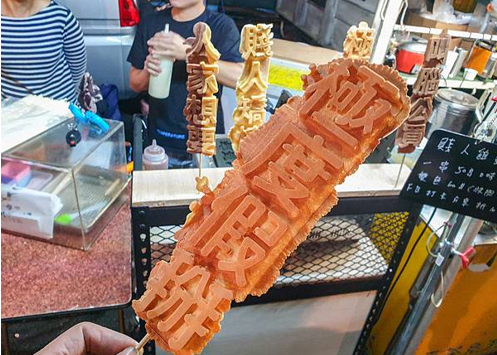
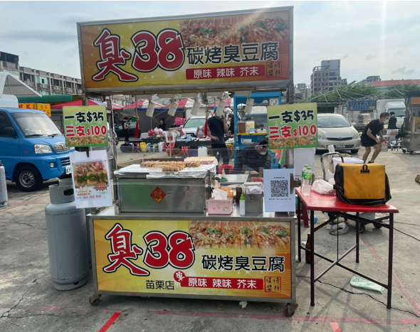
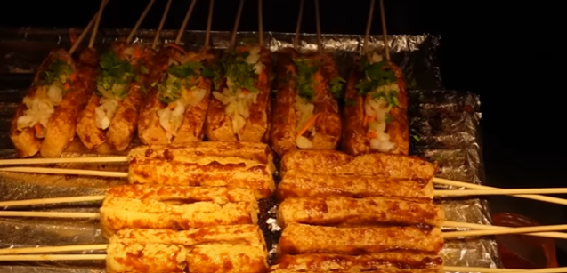
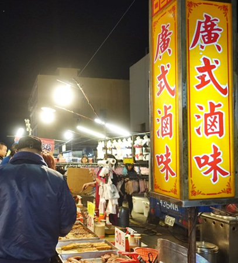
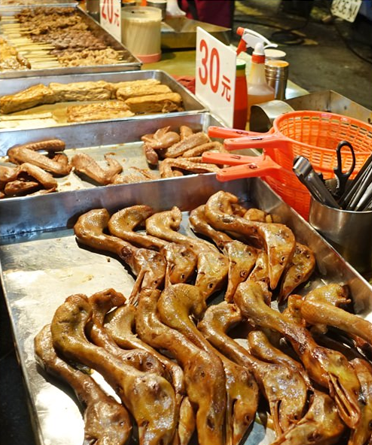

中部夜市著名美食指南
苗栗縣
英才觀光夜市
後龍夜市
公館夜市
國泰夜市
臺中市
逢甲國際觀光夜市
一中街夜市
旱溪觀光夜市
忠孝路觀光夜市
彰化縣
精誠夜市
龍燈夜市
北斗夜市
南投縣
集集夜市
埔里城觀光夜市
埔里魚市場觀光夜市
草鞋墩人文觀光夜市
雲林縣
斗六觀光夜市
參考資料
資訊
苗栗公館觀光夜市是週六限定的地方流動夜市！攤販裡面有吃有喝又有玩，算是禮拜六比較大規模的夜市。
營業時間
周六：17:00~22:00
地址
363苗栗縣公館鄉通明街56號
著名美食介紹
賤人雞蛋糕


一間是可以自己選"字"的雞蛋糕，
有各種不同的標語
，
真的蠻有梗的XD
有很多不同的字可以選
安內母湯 賤人矯情
辣妹駕到 是在哈囉
大港你贏 極度假掰
我愛高雄 溜之大吉
臭38碳烤臭豆腐


從配料到醬料，最後是臭豆腐本身都是手工製的，臭豆腐本身扎實，配上泡菜的爽脆，最後用醬料點綴，達到一個完美融合。
廣式滷味


滷味滷汁不會太重口味，且都有滷進食材裡，重點是食材都很新鮮，是個常常需要排隊的攤販。
靜宜大學 資料科學暨大數據分析與應學系 陳慶耀 王瑞鴻 葉毅華 吳其翰 蔡沅峻 羅國泰 製作2023